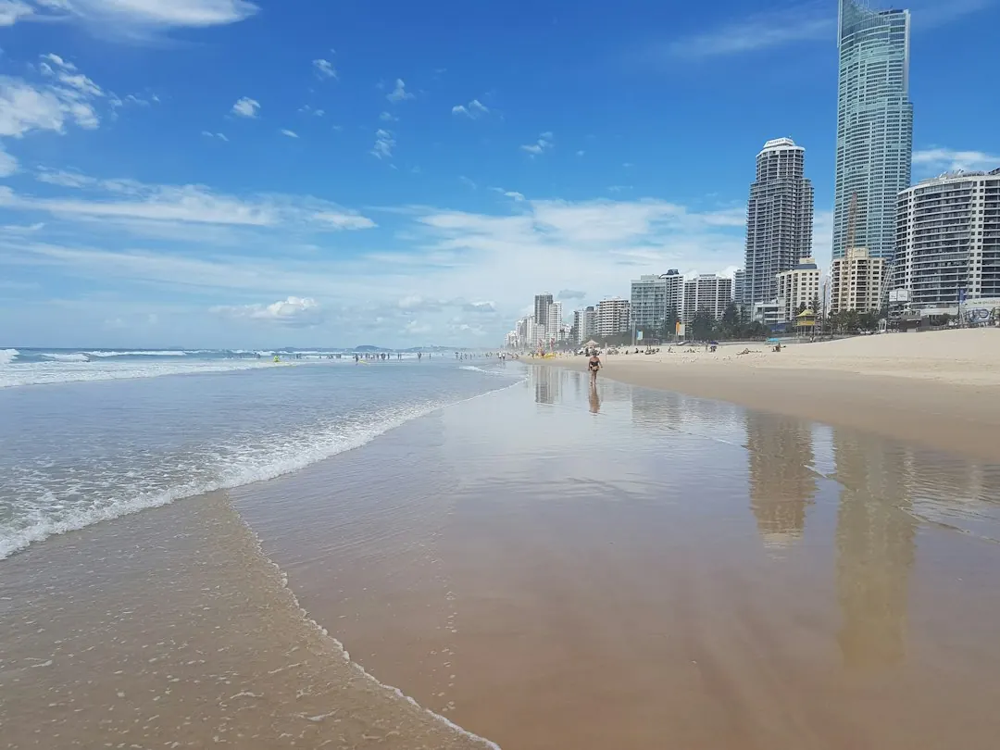

A Gold Coast pool project should begin with the pool type, block conditions, engineering needs and approval order. Custom concrete, infinity edge, luxury, plunge and renovation projects each require different design decisions. Building approval comes before digging, and the compliant barrier must be in place before the pool is filled to 300 mm or more. For work above $3,300, review and sign a written, dated contract before starting.
For homeowners comparing pool builders gold coast options, the practical decision is how the design, site conditions, approvals and surrounding outdoor area will work together.
Pool Builders Gold Coast Explained
Pool Builders Gold Coast presents the choice as a design and site-planning decision, rather than a simple product selection. A bespoke concrete pool can be shaped around the block, while a plunge pool may suit a small, townhouse or narrow-access yard. An infinity or wet-edge pool introduces different questions for a view, slope or waterfront site.
Begin with the property area, preferred timing, access points and the way the pool will be used. A rough idea or inspiration image is enough for an initial discussion. The useful detail comes from matching the intended shape and features with excavation, engineering, drainage, retaining and access requirements.
- Choose custom concrete when shape and placement need to follow the block.
- Consider a plunge design where space or access limits the layout.
- Ask how an infinity edge will be engineered on a sloping or waterfront site.
Separate the build from the finishing choices
Pool design is only one part of the outdoor area. The published guidance places shade, paving, glass fencing and landscaping alongside the pool from the first sketch, so the finished space does not depend on late changes. Luxury features such as spas, water features, heating, automation and lighting should be discussed and budgeted as one group rather than added informally.
A renovation follows a different decision path. The existing concrete shell may be retained while finishes, coping, tiles, lighting and equipment are modernised. Ask which parts are being reused, which are being replaced and whether the written scope explains the connection between the pool work and the surrounding area.
For either project, request an itemised description of inclusions. It should make clear whether the proposal covers the chosen finish, coping, equipment, barrier, access arrangements and any external work that affects the final result.
Treat approvals and site conditions as quote inputs
Building approval comes before digging, and the barrier must be compliant before the pool is filled to 300 mm or more. That order affects planning, handover and the point at which the pool can be used. Ask who is responsible for the approval steps and what evidence will be supplied before filling.
Gold Coast blocks can present materially different conditions. Beachside lots may have tight access, while hinterland or sloping sites can require closer attention to excavation, retaining and drainage. Canal properties and view blocks also deserve a site-specific discussion rather than a copied allowance.
Summer storms can pause digging and concrete stages at short notice. Before signing, ask how weather delays are communicated, who checks the site after heavy rain and which stages must be rescheduled if ground conditions change.
- Confirm the builder's licence covers the pool work in the contract.
- Ask whether engineering, excavation, rock, access, spoil handling and retaining are included.
- Clarify the barrier scope and the approval sequence.
Compare quotes on the same written scope
A lower bottom line is not a reliable comparison when two proposals treat site work differently. Request the same basic scope from each builder, then mark every allowance, exclusion and provisional item. This is particularly important where a block has a slope, limited machine access, unusual excavation or drainage constraints.
| New custom build | Pool renovation | Questions to compare |
|---|---|---|
| Excavation, structure, finish and equipment are planned from the beginning. | Existing finishes, coping, tiles, lighting or equipment may be changed. | What is included, excluded or dependent on site inspection? |
| Shape, placement and engineering follow the block. | Existing conditions influence what can be retained. | Who handles approvals, access, engineering and the barrier? |
Ask for the site supervisor's name and direct contact before signing. Confirm how changes are approved, how weather interruptions are recorded and when the final inspection or handover occurs. The written contract should match the quote, especially for work above $3,300.
Who this guide applies to
This guide is for Gold Coast homeowners planning a custom concrete, infinity edge, luxury, plunge or renovation project. It is also relevant to owners comparing a beachside lot, a canal property, a townhouse yard or a sloping hinterland block where access and ground conditions may change the scope.
It is less useful for someone seeking a standard kit option or a general landscaping-only project. The published material is centred on premium pool planning, licensed and insured builders, approvals, safety barriers and coordinated outdoor living.
Before making contact, write down the suburb, property area, preferred pool type, timing, access concerns and any site notes. Then ask for a free quote that identifies the assumptions behind the design. A completed pool on similar ground can also provide a useful comparison, particularly where excavation, retaining or drainage may be significant.
For a more specific comparison of structural construction choices, see the guide to concrete pool construction on the Gold Coast.
- Define the project. Record the pool type, property area, preferred timing, access and the features you want considered.
- Check the site questions. Ask about excavation, engineering, retaining, drainage, spoil handling and machine access before comparing prices.
- Confirm approvals. Establish who handles building approval and how the compliant barrier will be confirmed before filling.
- Review the contract. For work above $3,300, check the scope and sign a written, dated contract before work starts.
| Decision area | New pool project | Existing pool renovation |
|---|---|---|
| Main design question | How should shape and placement fit the block? | Which shell, finishes or equipment can be retained? |
| Site question | What engineering, excavation, access or drainage is required? | What existing conditions affect the proposed changes? |
| Contract question | Are the structure, finish, equipment and barrier itemised? | Are replacement finishes, coping, tiles, lighting and equipment itemised? |
Common questions
Can a rough idea be used to begin planning? Yes. Gold Coast Family Pools says a sketch or inspiration photo is optional, so the starting information can be the pool type, suburb, timing and site notes.
What should be checked before digging? Confirm that building approval is addressed before excavation and that the builder's licence covers the pool work in the contract. Ask how engineering, access, excavation, retaining and drainage are treated in the quote.
When must the pool barrier be compliant? The published guidance says the barrier must be compliant before the pool is filled to 300 mm or more. Ask who checks this and what documentation is required before filling.
How should two pool quotes be compared? Use the same written scope and compare inclusions, exclusions and site allowances. Check excavation, rock, engineering, access, spoil handling, retaining, the barrier and outdoor-area work rather than comparing only the bottom line.
Can weather affect the construction sequence? Yes. The guidance notes that Gold Coast summer storms can pause digging and concrete stages. Ask who communicates rescheduling and checks the site after heavy rain.
This guide covers pool type, site conditions, approvals, barriers, quote comparisons and contract checks for Gold Coast projects.